Mastering the HSC Exam (Drawing Questions)
Learning Intention and Success Criteria
Learning Intention - Students will:
- Learn how to use the drawing tool in the online HSC exam.
- Learn how to draw system modelling tools using the HSC online drawing tools.
Success Criteria - Students can:
- Apply their knowledge to answer questions that require using the HSC online exam drawing tool.
Content
Overview: What's on this page?
- General procedure for answering drawing questions in the HSC.
- Specific guidance on how to answer the different types of drawing questions.
- Example HSC questions with sample answers, questions walkthroughs, and marking guidelines. Below is a question grid.
| Question | Marks | Target Band | Sample Answer | Question Walkthrough | Marking Guidelines/Criteria |
| Dataflow Diagram (DFD) | 4 | 4-6 | Yes | Yes | Yes |
| Storyboard | 3 | 3-4 | Yes | Yes | Yes |
| User Interface | 3 | 3-4 | Yes | Yes | Yes |
| Flowchart | 3 | 3-5 | Yes | Yes | Yes |
| Class Diagram | 4 | 5-6 | Yes | Yes | Yes |
| Decision Tree | 3 | 4-5 | Yes | Yes | Yes |
| Structure Chart | 4 | 5-6 | Yes | Yes | Yes |
| Entity Relationship Diagram (ERD) - technically not in your syllabus, but give it a go for fun if you want. | 4 | 4-5 | Yes | Yes | Yes |
How to Answer Drawing Questions
General Procedure:
- Read the question carefully to determine what you need to draw.
- Analyse any provided stimulus.
- Create your response using the online HSC exam drawing.
- Re-read the question and examine your work to ensure your answer is correct.
How do I use the online HSC exam drawing tool?
NESA has produced two videos explaining how the drawing tools works. They can be found in the assessment section of your syllabus or linked below.
- Using the online HSC exam Drawing Tool.
- Using the online HSC exam Screen Design Tool.
Examples
Drawing questions normally test your skills rather than content recall. This is why information on them is typically found in your course specifications with the exception of user interfaces which is under your "designing web applications" syllabus dot point. In the HSC exam, you could be asked to draw a selection of the following:
- dataflow diagram (DFD)
- storyboard
- user Interface (screen design)
- flowchart
- class diagrams
- decision trees
- data dictionary (more common as a fill-in-the-blanks question so a drawn example is not here, but make sure you know what it looks like just in case.)
Dataflow Diagram
Drawing Questions — Dataflow Diagram (DFD)
Dataflow diagram can be assessed in many formats (including, but not limited to multi-choice, fill in the blank, written short answer), but the most common format is for you to draw one using the NESA HSC Drawing tool.
The two different types of dataflow diagram you will need to be able to draw are
- Level 0 DFD (Only one single process representing the entire system in the centre and the external entities around it.)
- Level 1 DFD (The more common one where you include the varied processes and data stores that allow the system to work.)
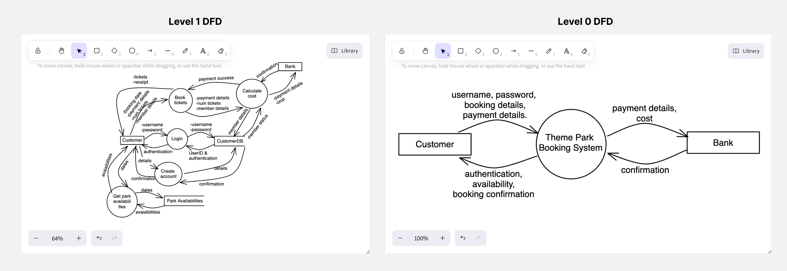
Steps for Answering DFD Questions:
- Read the question carefully to see what you have to do.
- Read and highlight the stimulus. DFD almost always have a stimulus. When you read the stimulus, you need to use the highlighter tool to highlight the processes, external entities, and data flows, and data stores.
- Use the drawing tool to create your response:
- Draw the core of your diagram. This involves putting down the most important processes and external entities.
- Expand on the existing diagram by adding the additional processes.
- Reread the question/stimulus and make sure you haven't missed anything in your diagram.
ACTIVITY: Practice HSC Style Question
Answer the Question: Using the question procedure above, expand DFD Example Question 1 below and complete it either on a piece of paper or using the online HSC Drawing Tool. You can access it by navigating to question 9 the HSC Software Engineering Familiarisation Exam, which has a drawing space you can repurpose for this question.
Learn from the Question:
- Compare your answer with the sample answer in the second expander below.
- Read the question walkthrough to see how to improve and for tips on how to maximise your marks in this type of HSC question.
- Formally mark your response from the eyes of a marker using the provided marking criteria.
Dataflow Diagram — Example Question (without annotations)
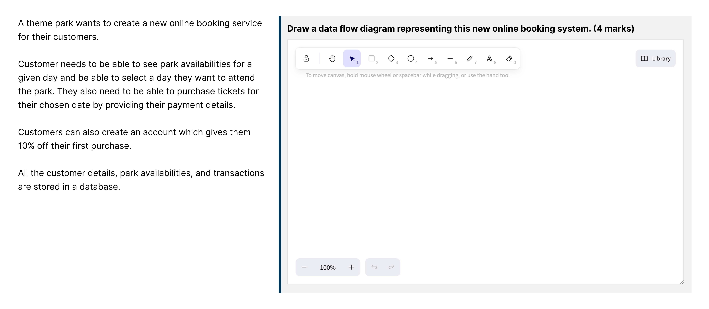
Dataflow Diagram — Example Question (sample answer, question walkthrough, how to mark your work)
Sample Answer
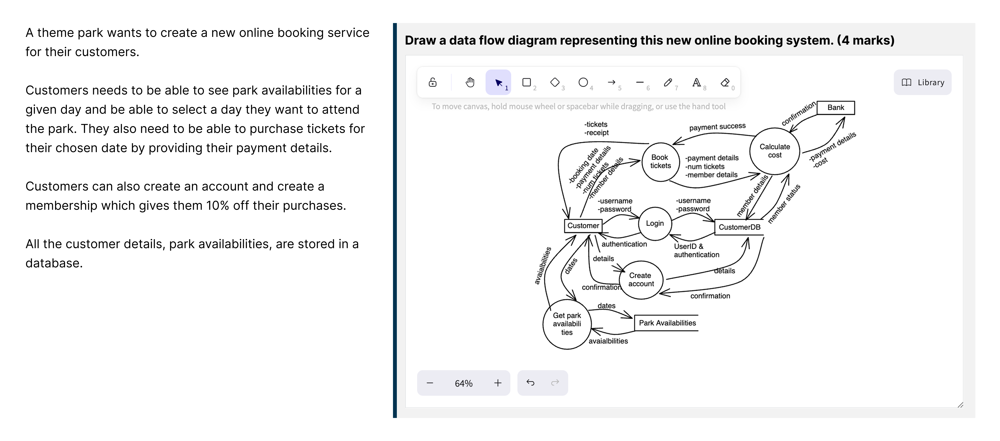
Question Breakdown & Tips and Tricks
Question: Draw a data flow diagram representing this new online booking system. (4 marks)
Step 1. Read the question carefully
When reading the question, it's important to ask these two questions:
- What is the topic/content area? This question is testing our skill of drawing data-flow diagrams to represent a system. This means we need to immediately recall the symbols used which are Circles for processes, Rectangles for external entities, Open Rectangles for data stores and Arrows for data flows. A handy acronym for this is ORCA (Open Rectangles, Rectangles, Circles, Arrows). More information is available on page 5 and 6 of your course specifications. If you've forgotten how to draw dataflow diagram, this annotated answer should remind you, however a full tutorial can be found at 4.11 Modelling Tools.
- What are we required to do? We need to draw a dataflow diagram that represents the online booking system. This means we need to analyse the scenario of the online booking system identifying all the different parts and how they fit together in a dataflow diagram.
Stimulus:
A theme park wants to create a new online booking service for their customers.
Customers needs to be able to see park availabilities for a given day and be able to select a day they want to attend the park. They also need to be able to purchase tickets for their chosen date by providing their payment details.
Customers can also create an account which gives them 10% off their first purchase.
All the customer details, park availabilities, and transactions are stored in a database.
Step 2. Analyse the stimulus
When analysing the stimulus for a dataflow diagram question, we need to identify all the components and start thinking about how they fit together. The HSC Online exam platform has three different highlighter colours which we will use to annotate the scenario. For this example, I will highlight external entities in yellow, processes in red, and data flows in blue. We will just keep the data stores in our head.
Also, not everything you need to include will be spelled out explicitly in the scenario. Sometimes it will just mention a feature and expect you to come up with a process and data flows to make it happen. In this question, that is the calculate cost process and the membership data flow. The bank as an external entity is also not mentioned explicit, but is required for transactions. Adding these extra pieces will help turn your response into a band six response.
External Entities
- Customers — Since they are providing information to the system and receiving something in exchange.
- Bank (Since there are transactions happening, the customers bank will be consulted. This is a band 6 thing to include.)
Note
In this scenario, the water park isn't really an external entity since they are not actively providing anything to the system.
Processes
- See park availabilities
- purchases tickets
- create an account
- login (since we can create an account)
- Calculate price (I've added this since there was mention of a discount)
Data flows
- chosen date
- day
- payment details
- customer details
- membership details (not explicitly in the question but required for discount/price calculation)
- park availabilities
- transactions
Data Stores
- Customer Info
- Park availabilities
Note
You could combine everything into one database so long as it's somewhat related content, but sometimes it can make the data flows diagram neater it you split the data stores up a little.
Step 3.1. Draw the core of the diagram
It's often best to start with the most important processes. For this, we will first draw the Customer external entity, the create account process, and the customer info data store since these are all associated with that functionality. Now, we just need to draw arrows between each of them to create a flow of data which makes sense. If you're ever confused, think back to similar experience, e.g., when you last created an account. You probably had to provide your first name, last name, email, phone number, etc, which we will just abbreviate to customer information. This will then be sent into the database. We can then pass back confirmation to the customer. We will also do a similar thing for the login process.
Processes should always have an input and output
Each process should always have an input and an output. We don't want processes that are blackholes gobbling up information or likewise ones that just generate information from nowhere. Even if you can't think of a logical output, normally "confirmation" is a good return dataflow, or "request data" as an initiative data flow.
Many data flow diagram questions involve some sort of login/sign up process and the way you draw it is almost identical from question to question. Getting this step done usually guarantees about 1 marks, so even if you don't understand the rest of the question, doing this simple core of the diagram will get you started.
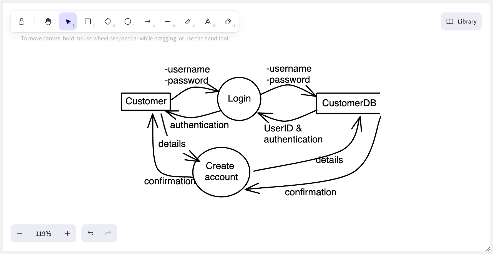
Step 3.2. Add the other processes
The next most important process is the get park availabilities process which needs to interface with the park availabilities data store. After the user decides on a date, they can send it to the book tickets process along with their payment details and member details. Since the cost of the order changes based on their membership status, we will need another process which calculates the price and communicates with the bank regarding the transaction.
You'll also notice that we've included multiple data items on some of the arrows. This is because we can't have more than one arrow going in each direction so we bundle stuff on one arrow/data flow. If you want to condense the amount of writing by abbreviating booking date, payment details, num tickets and member details to order/personal information, you might be able to get away with that, but you need to ensure you don't loose precision by doing so. You want to show the marker a nuanced understanding of the question, so it's often best to show a little extra detail that you think is necessary. An example of loosing precision would be abbreviating the previous to something like booking details since this neglects the membership details.
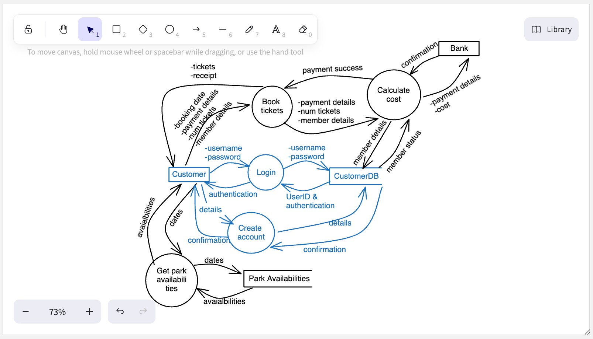
Step 4. Examine your work and make sure it's correct
Looking back to our highlights of the stimulus, it looks likes we've addressed all the required external entities, we've got all the main processes and the data flows between everything make sense and are adequate. This dataflow diagram is more than you would need to do for full marks, but it's what you should be aiming for.
Marking Criteria (through the eyes of a marker)
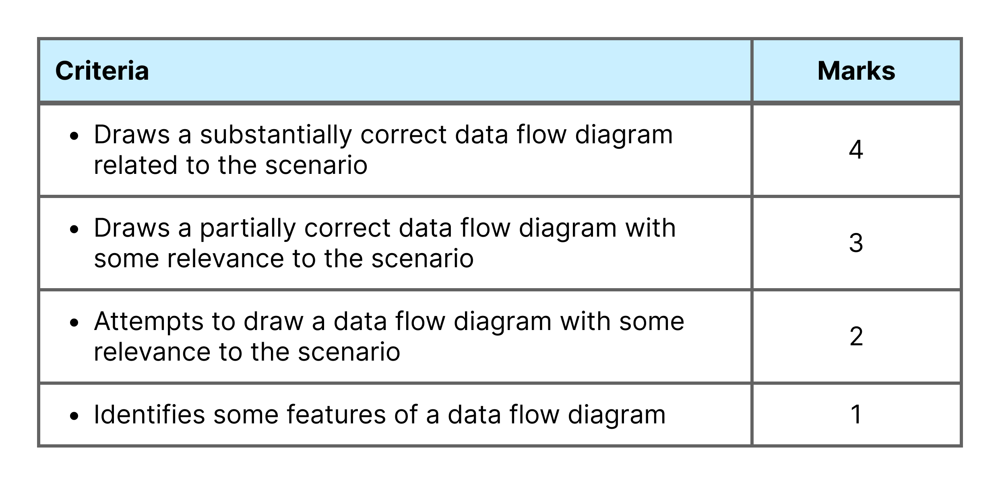
How to get full marks?
- The first key phrase is "substantially correct". This means, to get full marks, your diagram doesn't have to be perfect. If you missed one or two small things, you can still get 4/4, so don't stress, just focus on doing your best job. If you didn't include the bank as an external entity or you combined the calculate cost process with the booking, you might still be get full marks too, however you don't want to take any chances, so it's best to include a bit of extra detail to ensure a 4/4 like the exemplar does.
- The other key phrase is "related to the scenario". This means you can't just create a generic diagram that would work for many questions. Your answer must be tailor made for the question. The simplest way you can do this is use words from the question. Make sure you include the exact phrasing of the external entities and processes you highlighted. Not all the things you need to include will be in the question though, so you need to come up with more of your own. E.g since the mentioned membership can give a 10% discount, I've included an extra process to the booking features called calculate cost which takes in and validates membership details.
I'm completely stuck and not getting anywhere. How do I salvage as many marks as a I can?
- Don't leave the question blank. If you're totally stuck, there are always some basic things you can do to guarantee at least one or two marks. After this, flag the question so you can come back to it after you finish the rest of the exam, hopefully with fresh ideas to claim a few more marks.
- You'll notice there is one mark for "identifying some features of a dataflow diagram". This means that if you're stuck, you only need to provide two things related to a dataflow diagram to get at least one mark. This could be as easy as drawing the customer external entity which is super easy to identify and then create account process or the get park availability process.
- Now to try and get two marks, you would start drawing some arrows from customers to a process and put some relevant label on it and then return something valid or even just a confirmation. From there you may feel more confident to add some other processes you've highlighted in the question and possibly a datastore. At this point you would definitely have two mark or maybe even three. This is why putting something down for the answer even if you don't think it's correct if valuable since you could easily get at least 2-3 marks just by working through what you've highlighted in the stimulus, which is better than 0/4.
Storyboard
Drawing Questions — Storyboard
Storyboard question typically require you to read a stimulus and come up with a series of frames/screen needed for an app. Each screen needs to have a low-fidelity mockup of the UI elements on it's screen and most importantly, you need to show the links between the different screens. E.g if clicking a button takes you to another page, you need an array from that button to the page it links to. An example from your course specifications is below:
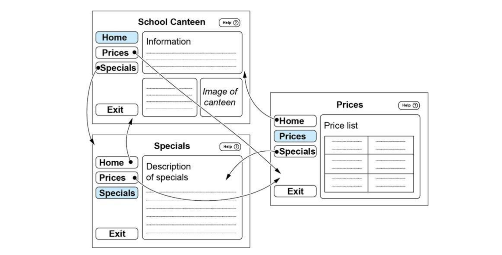
Steps for Answering Storyboard Questions:
- Read the question carefully to see what you have to do.
- Read and highlight the stimulus. Storyboard questions almost always have a stimulus. When you read the stimulus, you need to use the highlighter tool to highlight the different screens you need, what's on the pages, and the links between the pages. (note you often need to add extra detail from your own knowledge of UI/UX.)
- Use the drawing tool to create your response:
- Draw the screens.
- Add the links between them.
- Reread the question/stimulus and make sure you haven't missed anything.
ACTIVITY: Practice HSC Style Question
Answer the Question: Using the question procedure above, expand Storyboard Example Question below and complete it either on a piece of paper or using the online HSC Drawing Tool. You can access it by navigating to question 9 the HSC Software Engineering Familiarisation Exam, which has a drawing space you can repurpose for this question.
Learn from the Question:
- Compare your answer with the sample answer in the second expander below.
- Read the question walkthrough to see how to improve and for tips on how to maximise your marks in this type of HSC question.
- Formally mark your response from the eyes of a marker using the provided marking criteria.
Storyboard — Example Question (without annotations)
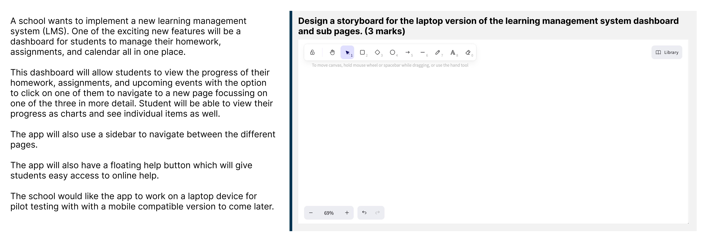
Storyboard — Example Question (sample answer, question walkthrough, how to mark your work)
Sample Answer
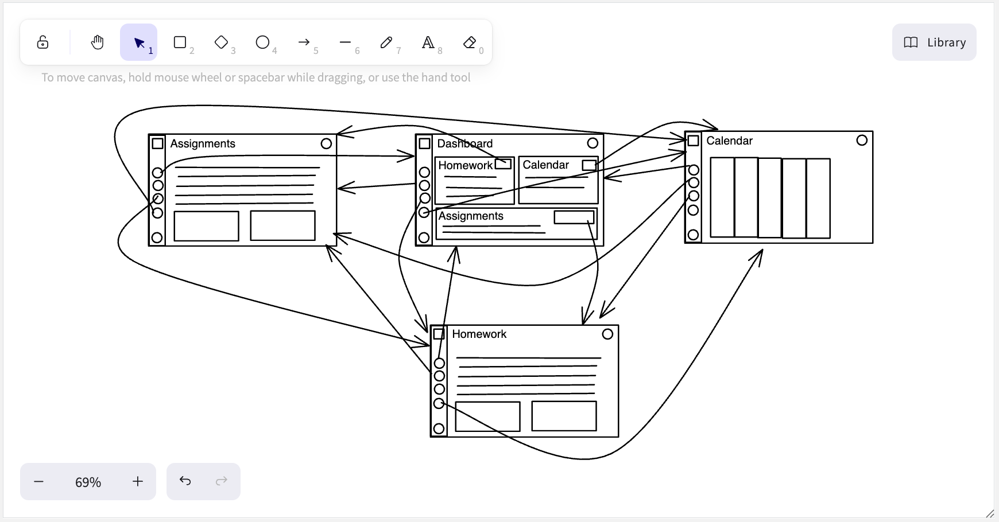
Question Breakdown & Tips and Tricks
Question: Design a storyboard for the laptop version of the learning management system dashboard and sub pages.
Step 1. Read the question carefully
When reading the question, it's important to ask these two questions:
- What is the topic/content area? This question is testing our ability to create a storyboard. This can be found on page 9 of your course specifications. Recall that a storyboard doesn't need to show too much detail on each individual screen. It's primary purpose is to show the general layout of the screens and how they all link together.
- What are we required to do? We need to design a storyboard for the laptop version of this LMS showing the dashboard and sub pages it links to. When we read the stimulus, we are now going to be looking closely for what the sub pages are and how they link to the dashboard. We also need to create screens that have roughly the aspect ratio of a laptop screen.
Stimulus:
A school wants to implement a new learning management system (LMS). One of the exciting new features will be a dashboard for students to manage their homework, assignments, and calendar all in one place.
This dashboard will allow students to view the progress of their homework, assignments, and upcoming events with the option to click on one of them to navigate to a new page focussing on one of the three in more detail. Student will be able to view their progress as charts and see individual items as well.
The app will also use a sidebar to navigate between the different pages.
The app will also have a floating help button which will give students easy access to online help.
The school would like the app to work on a laptop device for pilot testing with with a mobile compatible version to come later.
Step 2. Analyse the stimulus
After reading the question, we know we are looking out for what screens the app has and how they link together. While reading the stimulus, i've highlighted all the screens in yellow, and the links between them in blue. I've also highlighted what goes in each screen in red.
- What are the screens? Dashboard (mentioned in question). Subpages are homework, assignments and calendar.
- What's on the pages? Dashboard will have a summary of the homework, assignments and calendar. Each of those corresponding page has more detailed information of each item. Note how we don't need to include every small little detail like the graphs and help button since the screens in a storyboard only need to show the general layout, not every small detail.
- What are the links? Clicking on each of the summaries on the dashboard takes the user to the corresponding page. There is also a sidebar which links all the pages to each other.
Step 3.1. Draw the screens
- Start by drawing each of your screens. In this case we will use the rectangle tool to create a screen roughly the same aspect ratio as your laptop screen.
- Next we can use the rectangle and circle tools to draw the sidebar and top menubar.
- Since we need four screens for this storyboard, we will copy this template three times.
- We can then add text to name each screen and start to add some more boxes and lines to show the layout of the content and buttons on the screen. You should include a little bit of text on the screens where applicable for context like labelling each of the sections on the dashboard. Note that you can change the font size to add some hierarchy if needed.
Step 3.2. Add the links
- It can get quite messy as you start adding the arrows, this is mostly unavoidable, however by arranging each of your screen you can reduce the clutter. Often times a 'T' shape will work well for four screens which is what the sample answer has used.
- Draw the arrows using the arrow tool. You can press 'A' on your keyboard as a shortcut to access this tool.
- Click where you want the arrow to start and then drag it to where you want it to end and release. You can click on the little anchor point on the arrow to introduce a bend. If you want even more control over the shape of the arrow, make sure you have it selected and scroll down to the Actions section in the sidebar. Then click the edit arrow tool. Watch the NESA drawing tool video for more information on this.
Step 4. Examine your work and make sure it's correct
Looking back to our highlights of the stimulus, it's easy to see we've included all the required screens and we've also included all the links required.
Marking Criteria (through the eyes of a marker)
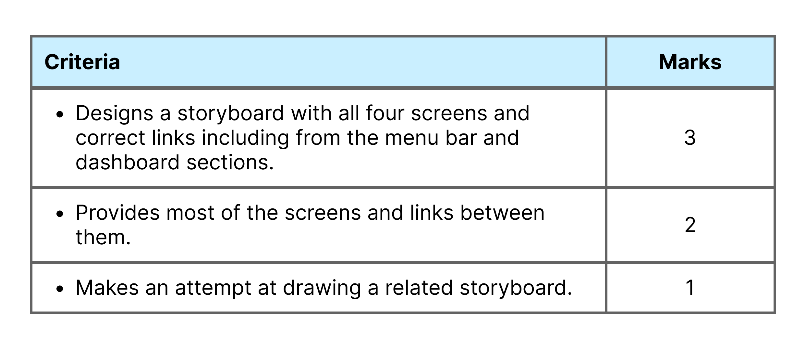
How to get full marks?
- To get full marks you need to include all four screens (dashboard, homework, assignments, and calendar). You also need to include the links from the dashboard summary sections to each of the individual screens and also the links between the pages from the menubar. To ensure you don't miss any of these its important to read and highlight the stimulus so you can easily glance back at the requirements as you work on the storyboard.
- Know how to create storyboards. Review page 9 of your course specifications.
I'm completely stuck and not getting anywhere. How do I salvage as many marks as a I can?
- Don't leave the question blank. If you're totally stuck, there are always some basic things you can do to guarantee at least one or two marks. E.g there is one mark for "making an attempt at drawing a related storyboard". After this, flag the question so you can come back to it after you finish the rest of the exam, hopefully with fresh ideas to claim a few more marks.
- Storyboards are relatively easy questions, so as long as you include all the screens, have some content on each and include all the required links, you will get full marks.
User Interface
Drawing Questions — User Interface
User Interface question typically require you to read a stimulus and come up with a suitable user interface to achieve the required task/goal. The UI needs to be a high fidelity mock up of the final application screen including all required input fields, buttons, UI elements, text, etc. If there are input fields, you should include labels specifying any appropriate data validation and other elements on the screen should also be labeled outlining their purpose.
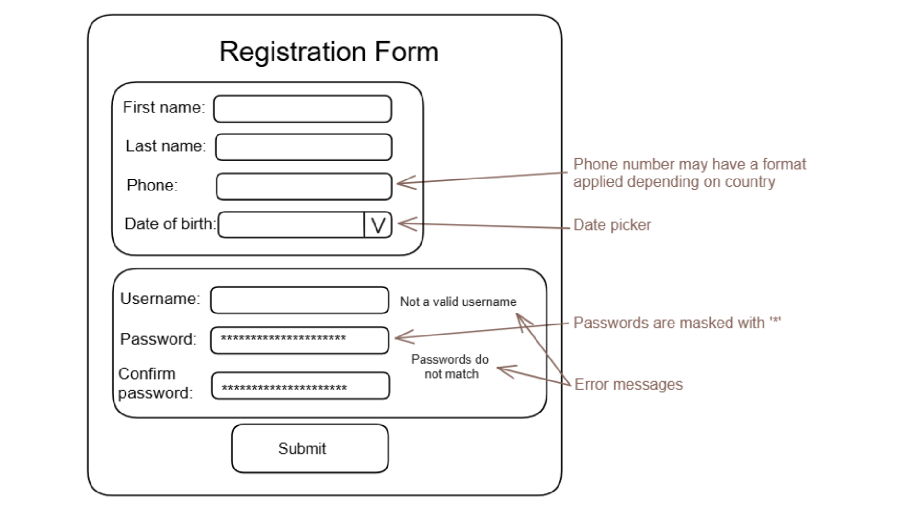
Steps for Answering Storyboard Questions:
- Read the question carefully to see what you have to do.
- Read and highlight the stimulus. User Interface questions almost always have a stimulus and are typically part of a multi-part question. When you read the stimulus, you need to use the highlighter tool to highlight the what UI elements are needed on the screen and any clues on how the user interacts with them (note you often need to add extra detail from your own knowledge of UI/UX)
- Use the drawing tool to create your response:
- Draw the screen and its UI Elements.
- Label the UI elements.
- Reread the question/stimulus and make sure you haven't missed anything.
ACTIVITY: Practice HSC Style Question
Answer the Question: Using the question procedure above, expand User Interface — Example Question below and complete it either on a piece of paper or using the online HSC Drawing Tool. You can access it by navigating to question 9 the HSC Software Engineering Familiarisation Exam, which has a drawing space you can repurpose for this question.
Learn from the Question:
- Compare your answer with the sample answer in the second expander below.
- Read the question walkthrough to see how to improve and for tips on how to maximise your marks in this type of HSC question.
- Formally mark your response from the eyes of a marker using the provided marking criteria.
User Interface — Example Question (without annotations)
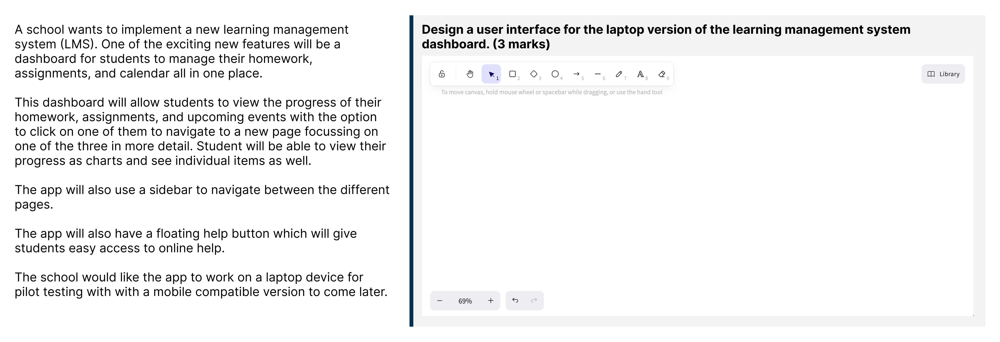
User Interface — Example Question (sample answer, question walkthrough, how to mark your work)
Sample Answer
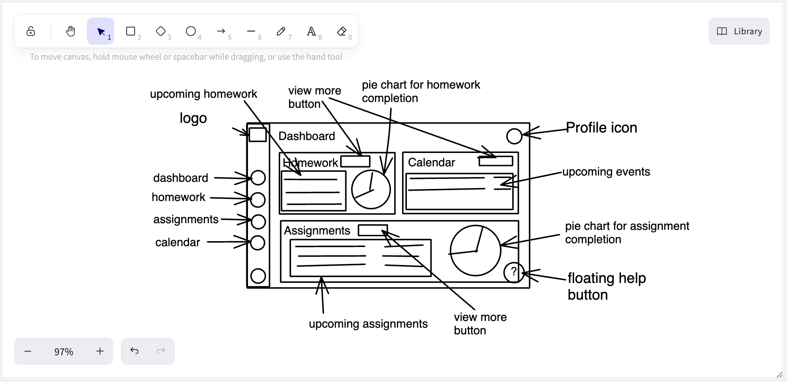
Question Breakdown & Tips and Tricks
Question: Design a user interface for the laptop version of the learning management system dashboard. (3 marks)
Step 1. Read the question carefully
When reading the question, it's important to ask these two questions:
- What is the topic/content area? This question is testing our ability to create a user interface. Drawing user interfaces is not explicitly mentioned in your syllabus, however the UI/UX skills required to make one are included in your programming for the web topic under the "Design, develop and implement a progressive web app (PWA)" dot point of designing web applications. Recall that a user interface is usually of a single screen only and includes far more detail of that single screen compared to a storyboard screen. It will often include lots of labels and even mention things like validation on inputs fields where a applicable.
- What are we required to do? We need to design a user interface for the laptop version of the dashboard for this app. When we read the stimulus, we are now going to be looking closely for all the elements that are on this page since we need to create a relatively detailed and labeled screen design. We also need to create it is roughly the aspect ratio of a laptop screen.
Stimulus:
A school wants to implement a new learning management system (LMS). One of the exciting new features will be a dashboard for students to manage their homework, assignments, and calendar all in one place.
This dashboard will allow students to view the progress of their homework, assignments, and upcoming events with the option to click on one of them to navigate to a new page focussing on one of the three in more detail. Student will be able to view their progress as charts and see individual items as well.
The app will also use a sidebar to navigate between the different pages.
The app will also have a floating help button which will give students easy access to online help.
The school would like the app to work on a laptop device for pilot testing with with a mobile compatible version to come later.
Step 2. Analyse the stimulus
After reading the question, we know we are looking out for what is on the dashboard and how the user interacts with them.
- What's on the screen? The students needs to be able to view the progress of their homework, assignments, and upcoming events. Using our UI/UX skills, it probably makes sense for these sections to be placed in a grid view on the screen to provide a summary of each whilst keeping their separated and distinct. Each of these sections will include a chart showing user progress as well as some individual items. There will be a sidebar which is typically on the left and a floating help button which is typically at the bottom right of the screen.
- How does the user interact with it? Clicking on the summary sections of the dashboard links the user to a page detailing that item so we probably need a "see more" button somewhere in each grid section. We also need to label the menubar to show that they can link to other pages.
Step 3.1. Draw the user interface
- We will start by using the rectangle tool to draw a rectangle about the size of our drawing area and in the aspect ratio of a laptop screen.
- We can then use the rectangle and circle tools to create the sidebar
- Use the text and shape tools to create the top menu bar.
- Use the rectangle tool to create the grid layout for the dashboard and add text to each section
- Use the circle and and line tools to add some charts/plots of your choosing. The sample uses pie charts.
- Add the "see more" buttons. These are typically at the top right of the summary sections.
- Add some lines to indicate lines of text where the individual items would show.
- Add the floating help button and use the text tool to place a question mark inside it.
Step 3.2. Label the user interface
This is an extremely important aspect of a user interface. You must include detailed labels.
We want to label everything specified in the question and more to make everything clear.
To add a label:
- Using the text tool to add labels outside your screen.
- Use the arrow tool to draw an arrow from the text to the item it is annotating.
Step 4. Examine your work and make sure it's correct
Looking back to our highlights of the stimulus, it's easy to see we've included all the UI elements and enough labelling to explain the elements and UX.
Marking Criteria (through the eyes of a marker)
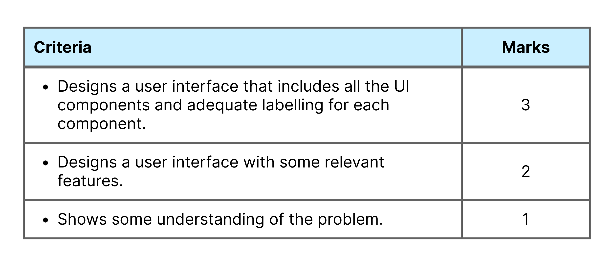
How to get full marks?
- To get full marks you need to create a user interface which includes all the UI components outlined in the stimulus. You also need to label each element. To ensure you don't miss any of these features its important to read and highlight the stimulus so you can easily glance back at the requirements as you work on the storyboard.
- Know how to create user interfaces. Revise the UI/UX section of 2.21 Progressive Web Apps.
I'm completely stuck and not getting anywhere. How do I salvage as many marks as a I can?
- Don't leave the question blank. If you're totally stuck, there are always some basic things you can do to guarantee at least one or two marks. E.g there is one mark for "showing some understanding of the problem". After this, flag the question so you can come back to it after you finish the rest of the exam, hopefully with fresh ideas to claim a few more marks.
- User Interfaces are relatively easy questions, so as long as you include all the elements from the stimulus and label them appropriately with additional data validation information, you will get full marks.
Flowchart
Drawing Questions — Flowchart
Flowcharts are generally algorithm questions. They require you to read a stimulus that outlines the requirements of an algorithm and then represent it in flowchart form using appropriate symbols/control structures. Below is an example of a flowchart from your course specs. If you're not up to date on your algorithms or flowcharting knowledge, revise pages 14–21 of your course specifications.
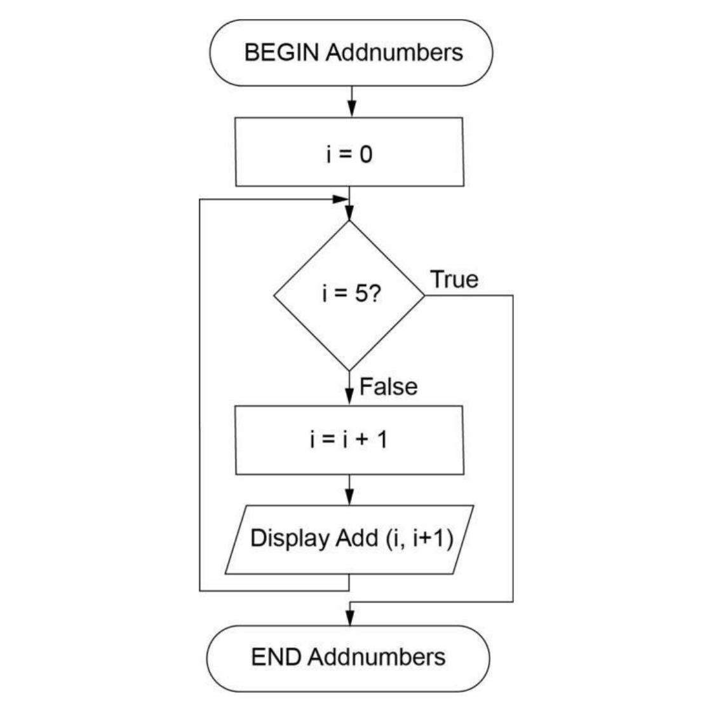
Steps for Answering Flowchart Questions:
- Read the question carefully to see what you have to do.
- Read and highlight the stimulus. User Interface questions almost always have a stimulus. When you read the stimulus, you need to use the highlighter tool to highlight the inputs/outputs of the algorithm, any specific process or subroutines it has and the control structures/different paths it has.
- Use the drawing tool to create your response. You always start and end with a terminator symbol. Make sure you use the correct symbols and logic to represent the specified algorithm as accurately as possible. Flowcharts always go down the page, not across.
- Reread the question/stimulus and make sure you haven't missed anything.
ACTIVITY: Practice HSC Style Question
Answer the Question: Using the question procedure above, expand Flowchart — Example Question below and complete it either on a piece of paper or using the online HSC Drawing Tool. You can access it by navigating to question 9 the HSC Software Engineering Familiarisation Exam, which has a drawing space you can repurpose for this question.
Learn from the Question:
- Compare your answer with the sample answer in the second expander below.
- Read the question walkthrough to see how to improve and for tips on how to maximise your marks in this type of HSC question.
- Formally mark your response from the eyes of a marker using the provided marking criteria.
Flowchart — Example Question (without annotations)
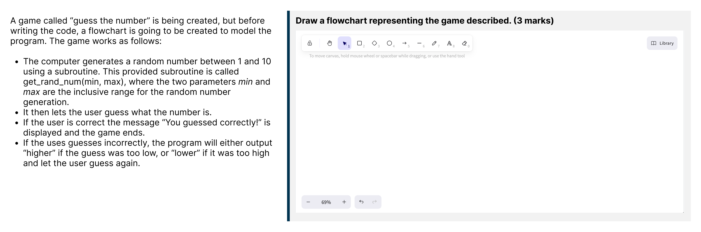
Flowchart — Example Question (sample answer, question walkthrough, how to mark your work)
Sample Answer
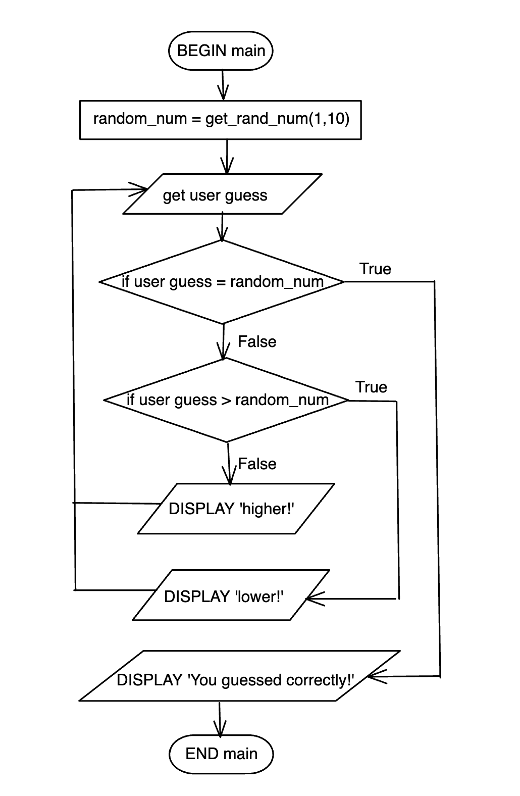
Question Breakdown & Tips and Tricks
Question: Draw a flowchart representing the game described. (3 marks)
Step 1. Read the question carefully
When reading the question, it's important to ask these two questions:
- What is the topic/content area? This question is testing our ability to create a represent a program or algorithm as a flowchart. This is found on pages 14–21 of your course specifications.
- What are we required to do? We need to draw a flowchart representing the game described in the stimulus. So, the next things we are going to do is read the stimulus, with a focus on identifying and highlighting the features of the game we need to model as a flowchart.
Stimulus:
A game called “guess the number” is being created, but before writing the code, a flowchart is going to be created to model the program. The game works as follows:
- The computer generates a random number between 1 and 10 using a subroutine. This provided subroutine is called get_rand_num(min, max), where the two parameters min and max are the inclusive range for the random number generation.
- It then lets the user guess what the number is.
- If the user is correct the message “You guessed correctly!” is displayed and the game ends.
- If the uses guesses incorrectly, the program will either output “higher” if the guess was too low, or “lower” if it was too high and let the user guess again.
Step 2. Analyse the stimulus
We need to read the stimulus to identify all the different pathways in this program. Luckily it's been laid out very clearly for us.
First, we need to get the random number using the subroutine. Then we take an input from the user. Then we will need to implement some decisions (diamonds) to figuring out what message to print and weather to continue the loop.
We will also need to output the correct message for each pathway.
Step 3. Draw the flowchart
- We will start with the terminator symbol at the start with the BEGIN 'program name' inside it. In this case, the program is just called 'main'.
- Next we need to get the user input which is technically a subroutine, but since we are also assigning the output of the subroutine to a variable, we will just put the assignment inside a process which will call the subroutine and assign it to the variable for us.
- Next we will use the input or output rhombus-like shape is get the user guess.
- Then we need a decision (diamond) to see if the guess is correct. If it is correct, we want to jump straight to the end of the program and display 'You guessed correctly!' using an input/output symbol again. We will just draw this below the rest of the diagram leaving space below the diamond for some more logic.
- Below that first decision diamond, we are going to add another diamond that checks if the user guess is greater than random num. Based on whether this is true or false, we can draw arrows to different input output shapes with different messages. Since we are displaying this presumably on a screen, we will use the pseudocode DISPLAY keyword.
- We want both of these displays to link back up to the 'get user guess' stage so the game can continue.
- Now we just need to draw arrows between all the shapes to show the logic of the game. We draw the arrows last because it makes it easier to move the shapes around as we tweak the logic and aesthetics.
Step 4. Examine your work and make sure it's correct
Looking back to our highlights of the stimulus it looks like we've included all the processes and accounted for all the pathways so the answer should be correct. It's often a good idea to step through your algorithm bit by bit to make sure the all the paths are correct, sort of like a quick desk check in your head.
Marking Criteria (through the eyes of a marker)
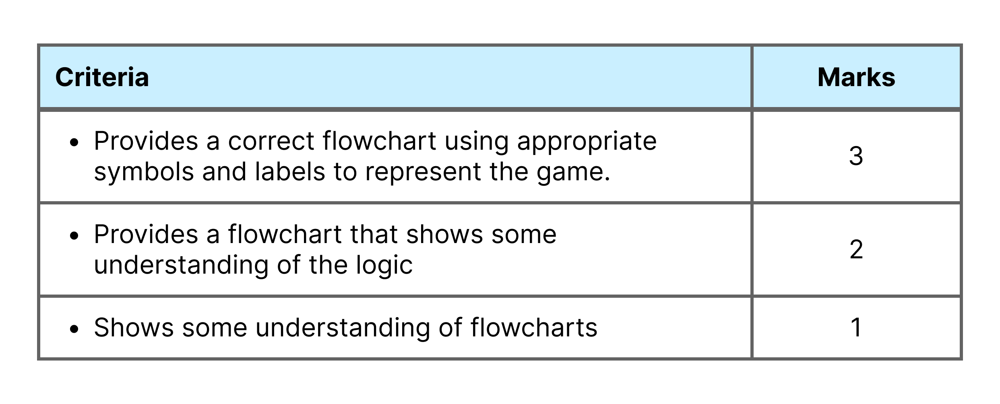
How to get full marks?
- To get full marks you need to provide a correct flowchart with all the correct processes and logical pathways and use the correct symbols for each part of the flowchart. Highlighting the stimulus will help ensure you don't miss anything.
- Know how to create flowcharts. Revise pages 14–21 of your course specifications.
I'm completely stuck and not getting anywhere. How do I salvage as many marks as a I can?
- Don't leave the question blank. If you're totally stuck, there are always some basic things you can do to guarantee at least one or two marks. E.g there is one mark for "showing some understanding of flowcharts". This means you literally just need to put down the BEGIN terminator symbol and link it into one more symbol and you could get one mark. After this, flag the question so you can come back to it after you finish the rest of the exam, hopefully with fresh ideas to claim a few more marks.
Class Diagrams
Drawing Questions — Class Diagram
Class diagrams are used to model the structure of programs written in the object orientated paradigm (OOP). They clearly show all the classes and their associated attributes/methods. They also show the types of relationships and inheritance between the classes. Below is an example of a class diagram from your course specifications. If you're not up to date on class diagrams, revise page 9 of your course specifications.
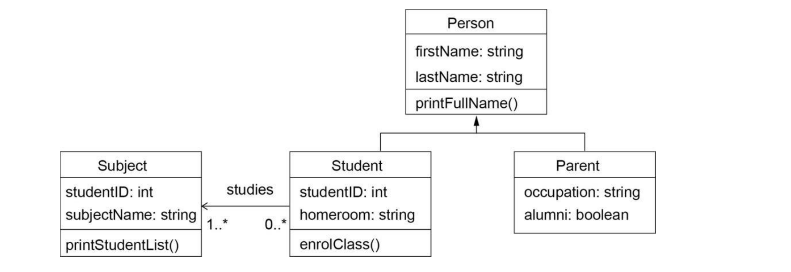
Steps for Answering Decision Tree Questions:
- Read the question carefully to see what you have to do.
- Read and highlight the stimulus. Class diagram drawing questions almost always have a stimulus. When you read the stimulus, you need to use the highlighter tool to highlight any clues to what the classes, attributes, methods, and relationships/inheritance will be.
- Use the drawing tool to create your response.
- Start by drawing in each of the classes with their attributes and methods.
- Draw the connections (inheritance and relationships) between the classes.
- Reread the question/stimulus and make sure you haven't missed anything.
ACTIVITY: Practice HSC Style Question
Answer the Question: Using the question procedure above, expand Class Diagram — Example Question below and complete it either on a piece of paper or using the online HSC Drawing Tool. You can access it by navigating to question 9 the HSC Software Engineering Familiarisation Exam, which has a drawing space you can repurpose for this question.
Learn from the Question:
- Compare your answer with the sample answer in the second expander below.
- Read the question walkthrough to see how to improve and for tips on how to maximise your marks in this type of HSC question.
- Formally mark your response from the eyes of a marker using the provided marking criteria.
Class Diagram — Example Question (without annotations)
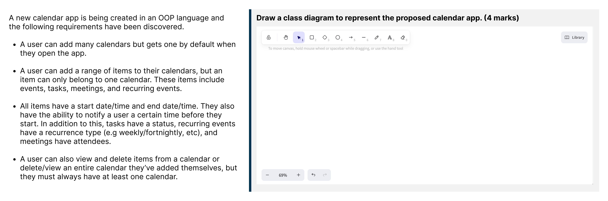
Class Diagram — Example Question (sample answer, question walkthrough, how to mark your work)
Sample Answer
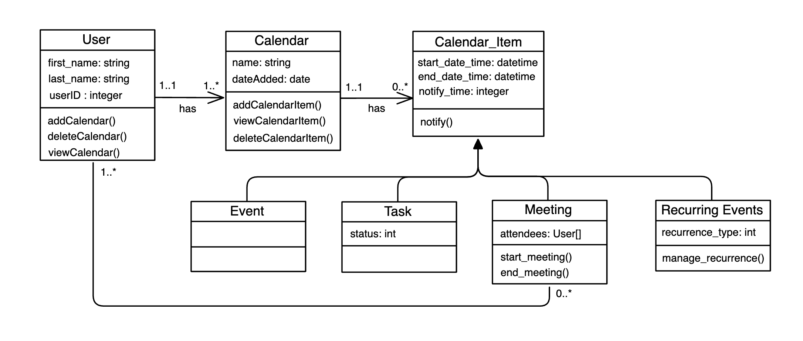
Question Breakdown & Tips and Tricks
Question: Draw a class diagram to represent the proposed calendar app. (4 marks)
Step 1. Read the question carefully
When reading the question, it's important to ask these two questions:
- What is the topic/content area? This question is testing our ability to create a class diagram for a calendar app. Class diagrams can be found on page 9 of your course specifications. Revise 4.11 Modelling Tools for more information or your year 11 "The object-orientated paradigm" topic.
- What are we required to do? We need to draw a class diagram, specifically, one that represents the proposed calendar app, so we now know that all our information is going to come from the requirements in the stimulus.
Stimulus:
A new calendar app is being created in an OOP language and the following requirements have been discovered.
- A user can add many calendars but gets one by default when they open the app.
- A user can add a range of items to their calendars, but an item can only belong to one calendar. These items include events, tasks, meetings, and recurring events.
- All items have a start date/time and end date/time. They also have the ability to notify a user a certain time before they start. In addition to this, tasks have a status, recurring events have a recurrence type (e.g weekly/fortnightly, etc), and meetings have attendees.
- A user can also view and delete items from a calendar or delete/view an entire calendar they’ve added themselves, but they must always have at least one calendar.
Step 2. Analyse the stimulus
When reading the stimulus, it's crucial that you highlight the important pieces of information so you don't leave anything out or have to go looking through a long stimulus. Here I've highlighted the classes in red, the hints about the relationships/inheritance/multiplicity in yellow, and the attributes/methods in blue.
Classes:
- User
- Calendar
- Items (which we will rename calendar_items for clarity)
- events
- tasks
- meetings
- recurring events
Relationships:
- Users have Calendars (1 to many calendars) We will make the assumption that a calendar can only belong to one user.
- A calendar has calendar_items (0 to many calendar_items for each calendar). The stimulus specifies that a calendar_item can only belong to one calendar.
- There is an inheritance relationship between calendar_items and all the different calendar_items (events, tasks, meetings, and recurring events). If you're even confused think, if this class is a type of another class, it would be inheritance but if a class belongs to or has some other class, then it is a relationship.
- There also needs to be a relationship between User and Meetings. This one is harder to catch, but it is required because a meeting can have multiple users and each of those users need to be able to see their meetings. Even though the creator of the meeting can see their meeting through the calendar and calendar_item relationships, other user will not be able to without this extra relationship. The multiplicity is 1 to many on the meeting since a meeting needs to have one person and 0 to many on the meeting since a user may have 0 to many meetings.
Attributes/Methods:
| Class | Attributes | Methods |
| User | No explicit information on the attributes of a user have been mentioned so we just need to put ourselves in the shoes of the scenario and think, if we were developing a calendar app, what attributes would a user have? Logically the classics you can always fall back on are firstName, lastName and userID, though any reasonable attributes would be okay. | The user needs to be able to add, view and delete calendars so the methods all be addCalendar(), deleteCalendar(), and viewCalendar(). |
| Calendar | No explicit information has been provided in the stimulus, so we will need to infer reasonable attributes. If you're struggling, think to a time you've used a calendar app and think. It must have a name and dateAdded is always a good filler if you can't think of any other attributes. Colour would be another good attribute since many calendar apps allow you to customise the colour of different calendars. | We need to be able to add, view, and delete items on a calendar. Since these functions are directly associated with the feature of a calendar we will put them here. We need addCalendarItem(), viewCalendarItem, and deleteCalendarItem() |
| Calendar_Item |
We are told that calendar item needs to have a start and end date and also be able to notify Users, so we will include a notify_time attribute. Since reminds usually give users an option from 5 mins or 10 mins before, the notify_time attribute will just be an integer which stores this value. |
To notify users, there will need to be a notify method. |
| Event |
Event will inherit all the properties from Calendar_Item and I can't think of any extra attributes to add, so it's perfectly okay to leave it blank. |
Event will inherit the notify method, and we don't need any extras so we can leave it empty too. |
| Task |
Task It will inherit all the properties from Calendar_Item. However we need to add an extra status property. This status will be stored as an int. A string could also work, but an int is more robust. E.g 0 = not started, 1 = in progress and 2 = done, etc. |
Task will inherit the notify method, and we don't need any extras so we can leave it empty too. |
| Meeting |
We have a relationship which will encode who the meeting attendees are, but just for added clarity we will include attendees as an attribute and the data type will be an array of User objects. |
We need a method to start and end the meeting as the very least. |
| Recurring Event |
We need to store the recurrence type, eg. weekly, fortnightly and store it as an int e.g 0 = daily, 1 = weekly etc. |
We need a manage_recurrence() method to schedule/render all the recurrences when the item is added to the calendar. |
Note that you will be thinking through everything in this table as you highlight the stimulus. You can use a table like this to help you plan, but you have limited time in the exam, so it's best to just highlight the stimulus.
Step 3.1 Draw the Classes in the Class Diagram
- Click the library icon at the top right of the drawing area to open the shape library.
- Select the class diagram shape to insert it into the canvas. Note that this is a composite shape. It's just a set of lines grouped together. If you want to resize the shape (e.g to add more space for attribute) you just need to right click the shape and select "Ungroup selection" or select the shape, scroll to the bottom of the sidebar and in the "actions" section, click the ungroup button.
- Use the text tool to add a title in the top row of the shape. Then add the attributes in the second row and methods in the last row. It's perfectly okay to leave sections empty (link in Event) if it makes sense in the context of the scenario.
- Duplicate the class and update each duplicate with the information for all the other classes.
- Try and arrange your diagram so lines don't cross. E.g have all child class below the parent and related classes next to each other.
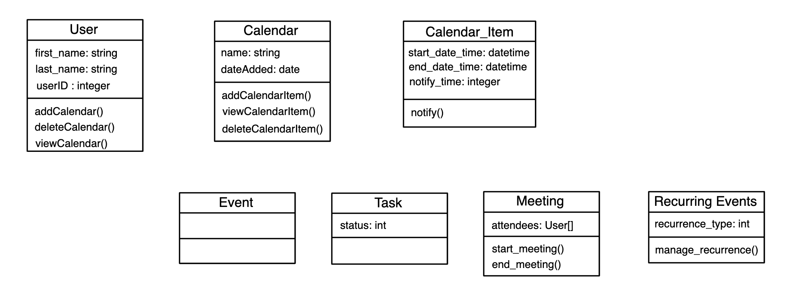
Step 3.2. Draw the connections
- Use the arrow tool to draw a the relationships and inheritance between the classes. Recall that relationships use unfilled arrows and inheritance uses filled arrows. You can set the arrow heads by clicking on the arrow an navigating to the arrowheads section in the drawing tool sidebar and set the type of arrow (including none) for each side of the arrow.
- If you have added a relationship, use the text tool to add a word on the arrow that indicates the type of relationship such as "has", "studies", "uses", etc.
- Add the multiplicity on each side of the arrow. There are a range of multiplicity options. Use the one that makes more logical sense from your analysis of the stimulus. Also remember that the multiplicity as attributed to the class it is closest to, e.g in the diagram below, the 1..1 next to the User class means there can only be one user mapping to a calendar and the 1..* next to the Calendar class means that 1 to many calendars can map to a User, so together they reveal that a User can have as many calendars as they want, as long as they have one and those calendar can only belong to that one User. The inheritance arrows don't have multiplicities.
Step 4. Examine your work and make sure it's correct
Our diagram has all the classes is needs, it has fully featured attributes and methods (including ones we created ourselves based on the scenario) and all the links have been made appropriately. The last thing to glance at would be the multiplicities to make sure you haven't mistyped one of them. This is a common mistake, so double check.
Marking Criteria (through the eyes of a marker)
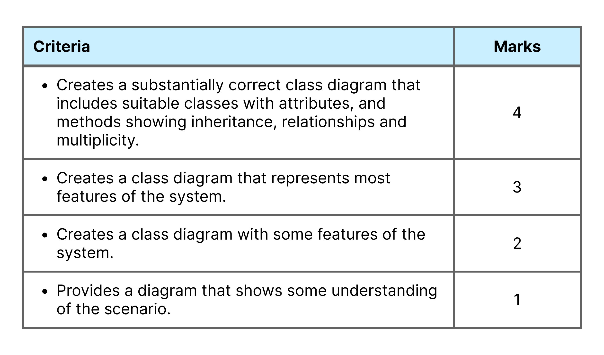
How to get full marks?
- To get full marks you need to create a substantially correct class diagram. This means that if one of your relationships was a bit off (e.g if you didn't include the relationship from Users to Meetings and just went with the attendees attribute storing the User object being enough, that would be substantially correct. Likewise, if you missed one of the non essential attributes, that would still be considered substantially correct. However, besides that, you need to have all the suitable classes kitted out with attributes, methods and have the correct arrows/multiplicities on the whole.
- Know how to create class diagrams. Revise 4.11 Modelling Tools for more information or your year 11 "The object-orientated paradigm" topic. Also revise page 9 of your course specifications.
I'm completely stuck and not getting anywhere. How do I salvage as many marks as a I can?
- Don't leave the question blank. If you're totally stuck, there are always some basic things you can do to guarantee at least one or two marks. E.g there is one mark for "showing some understanding of the scenario". After this, flag the question so you can come back to it after you finish the rest of the exam, hopefully with fresh ideas to claim a few more marks.
- Providing something that resembles a class diagram with some words from the stimulus would get you one mark and if you were just able to show the relationship between Users, Calendars, and Calendar_Items or just the inheritance between Calendar_Items and the children, that would be two marks. If you are total stuck, try making a table like in Step 2 above and use that a guide to build your class diagram and even if it's not perfect, you should land 3 marks.
Decision Trees
Drawing Questions — Decision Tree
Decision trees are composed of a series of question in rectangles attached to a series of possible answers that link into further questions below. There is a path from the root of the tree all the way to every leaf based on the answered made to each question in the tree. They can go vertically down the page or horizontally across the page. Below is an example of a vertical decision tree. If you're not up to date on decision trees, revise page 10 of your course specifications.
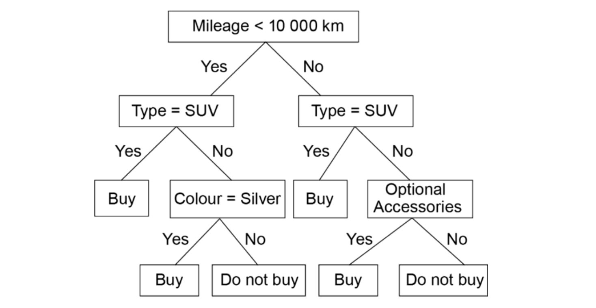
Steps for Answering Decision Tree Questions:
- Read the question carefully to see what you have to do.
- Read and highlight the stimulus. Decision tree questions almost always have a stimulus. When you read the stimulus, you need to use the highlighter tool to highlight any clues to the questions you need to ask as well as what the end points (leaves) of the tree will be.
- Use the drawing tool to create your response. You always start with the root of the tree and decide how many different answers there are (binary selection or multiple) and make your way down the tree until you have all the required solutions/leaves.
- Reread the question/stimulus and make sure you haven't missed anything.
ACTIVITY: Practice HSC Style Question
Answer the Question: Using the question procedure above, expand Decision Tree — Example Question below and complete it either on a piece of paper or using the online HSC Drawing Tool. You can access it by navigating to question 9 the HSC Software Engineering Familiarisation Exam, which has a drawing space you can repurpose for this question.
Learn from the Question:
- Compare your answer with the sample answer in the second expander below.
- Read the question walkthrough to see how to improve and for tips on how to maximise your marks in this type of HSC question.
- Formally mark your response from the eyes of a marker using the provided marking criteria.
Decision Tree — Example Question (without annotations)
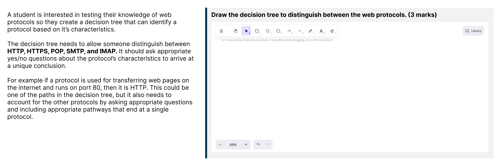
Decision Tree — Example Question (sample answer, question walkthrough, how to mark your work)
Sample Answer
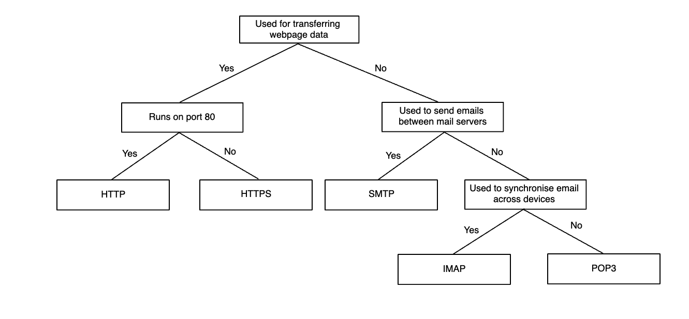
Question Breakdown & Tips and Tricks
Question: Draw the decision tree to distinguish between the web protocols. (3 marks)
Step 1. Read the question carefully
When reading the question, it's important to ask these two questions:
- What is the topic/content area? This question is testing our ability to create a decision tree in the context of web protocols. Decision trees can be found on page 10 of your course specifications and web protocols are in your Programming for the Web topic under "Investigate and describe the function of web protocols and their ports". Revise 2.3 Web Protocols for more information.
- What are we required to do? We need to draw a decision tree that allows us to distinguish between web protocols. We will need to refer to the stimulus for the exact requirements.
Stimulus:
A student is interested in testing their knowledge of web protocols so they create a decision tree that can identify a protocol based on it’s characteristics.
The decision tree needs to allow someone distinguish between HTTP, HTTPS, POP, SMTP, and IMAP. It should ask appropriate yes/no questions about the protocol’s characteristics to arrive at a unique conclusion.
For example if a protocol is used for transferring web pages on the internet and runs on port 80, then it is HTTP. This could be one of the paths in the decision tree, but it also needs to account for the other protocols by asking appropriate questions and including appropriate pathways that end at a single protocol.
Step 2. Analyse the stimulus
The stimulus makes it clear that we need to make a decision tree that asks increasingly nuanced questions that allow us to differentiate between the five protocols mentioned. We also need to arrive at a unique conclusion, so we can have one branch that says it could be HTTP or HTTPS, we need to have a single protocol at the end of each pathway. Also, we can only ask yes/no questions so we can't just have one level with five branches that ask what port the protocol runs on and distinguish the protocols like that. Instead, we need to ask four yes no questions to adequately tell the five protocols apart.
For each question as we move down the tree, we need to think of a new more targeted characteristic that can allow us to separate the protocols from each other sort of like how we would use a decision tree to diagnose an illness — first we start broad like where the pain is or what the protocol is used for and get finer such as what type of pain is felt or what port the protocol runs on.
Step 3. Draw the decision tree
- Since we need to ask at least three questions before arriving at a conclusion, we will ask a broad question to begin with like 'what is the protocol used for'. To make this a yes or no question, we will use "Used for transferring webpage data." If this question is yes it could be either HTTP or HTTPS and if not, it could be SMTP, IMAP, or POP3.
- Now to differentiate between HTTP and HTTPS the we could use the port it runs on. If it runs on port 80 it is HTTPS and if not, it is HTTPS. We could also ask a question of if it is encrypted or not which is another valid characteristic. Now we have finished this side of the tree.
- Now we need to start differentiating between SMTP, IMAP, and POP3. To do this we need to find a characteristic that only one of the three has. In this case we will ask if the protocol is used to transfer mail between mail servers since only SMTP is used for this.
- Now we are only left with the branch that deals with IMAP and POP3. To distinguish between these we need another appropriate characteristic. We know that only IMAP is used to synchronise mail across devices while POP3 simply retrieves mail from the server to one device. So, we can ask weather the protocol is used to synchronise email across devices and if yes, it is IMAP and if no, it's POP3.
Step 4. Examine your work and make sure it's correct
Looking back to our highlights of the stimulus we have only used yes/no questions, all our branches end at single protocols, and all the questions use defining features of the protocols to accurately distinguish them. Therefore we can be fairly confident our answer is correct.
Marking Criteria (through the eyes of a marker)
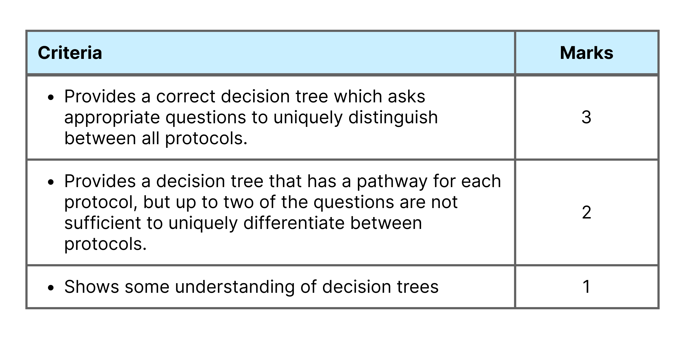
How to get full marks?
- To get full marks you need to provide a correct decision tree that uniquely distinguishes between all the protocols. This means each question needs to clearly and accurately divide the pool of protocols into smaller ones until we are only left with one clear result at the end of a brach of the decision tree. Highlighting the stimulus will help ensure you don't miss any of the key requirements.
- Know how to create decision trees. Revise page 10 of your course specifications.
I'm completely stuck and not getting anywhere. How do I salvage as many marks as a I can?
- Don't leave the question blank. If you're totally stuck, there are always some basic things you can do to guarantee at least one or two marks. E.g there is one mark for "showing some understanding of decision trees". This means you just need to put down one question with a yes and no leading into two results and that would get you one mark. After this, flag the question so you can come back to it after you finish the rest of the exam, hopefully with fresh ideas to claim a few more marks.
- Even if you're not sure how to differentiate between the protocols, try and do the broader questions at the top of the tree and you may get enough correct so that you sit in the two mark range where up to two questions can be wrong.
Structure Chart
Drawing Questions — Structure Chart
Structure charts represent a system by showing the separate subroutines that make up the system and their relationship to each other. They show the hierarchy of a program including which subroutines work together to produce a particular result and the data/flags passed between them all. They show the order in which modules/submodules are called since they are read from left to right top to bottom and there can be repetition and selection using appropriate symbols. Another sub tasks go down the diagram and any distinct steps of a process go across the diagram. If you're not up to date on structure charts, revise page 7 of your course specifications.
The image below is from page 7 of your course specs and it is not a good example of a structure chart.
- Firstly, all subroutines that are on the same level must be in line with each other, however the example in your course specs has them all over the place.
- They also have data and flags going down and up on inconsistent sides of the line. Stuff going down into a subroutine goes on the left of the connecting line and stuff coming up out of the subroutine goes on the right of the connecting line.
- Also, connecting lines should all start at the bottom centre of the parent node and connect to the top centre of the child node for consistency and neatness. This is not adhered to in the course specs.
- Other than that, the symbols are correct and the logic is okay.
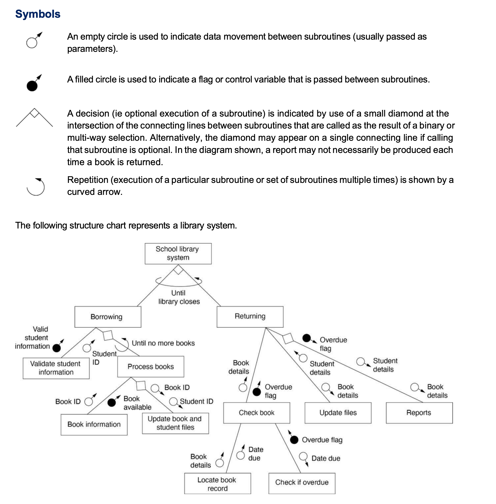
Steps for Answering Entity Relationship Diagram (ERD) Questions:
- Read the question carefully to see what you have to do.
- Read and highlight the stimulus. Structure chart questions almost always have a stimulus. When you read the stimulus, you need to use the highlighter tool to highlight any clues to what the modules are, their hierarchy and what data/flags/repetition/decision you will need.
- Use the drawing tool to create your structure chart.
- Draw the modules and arrange them in their hierarchy and leave enough space so data/flags can be placed along side the connecting lines.
- Draw all the data/flags/repetition/decisions.
- Reread the question/stimulus and make sure you haven't missed anything.
ACTIVITY: Practice HSC Style Question
Answer the Question: Using the question procedure above, expand Structure Chart — Example Question below and complete it either on a piece of paper or using the online HSC Drawing Tool. You can access it by navigating to question 9 the HSC Software Engineering Familiarisation Exam, which has a drawing space you can repurpose for this question.
Learn from the Question:
- Compare your answer with the sample answer in the second expander below.
- Read the question walkthrough to see how to improve and for tips on how to maximise your marks in this type of HSC question.
- Formally mark your response from the eyes of a marker using the provided marking criteria.
Structure Chart — Example Question (without annotations)
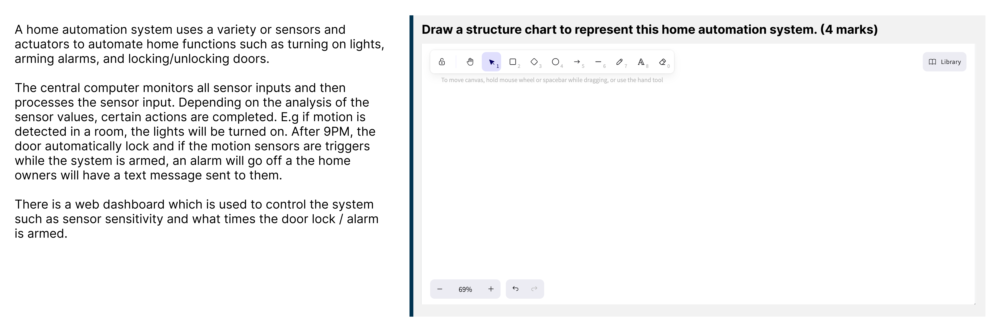
Structure Chart — Example Question (sample answer, question walkthrough, how to mark your work)
Sample Answer
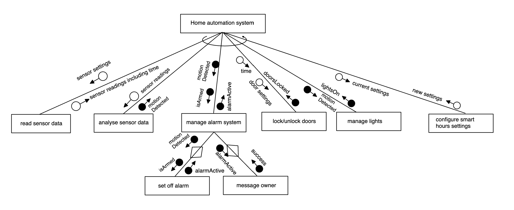
Question Breakdown & Tips and Tricks
Question: Draw a structure chart to represent this home automation system. (4 marks)
Step 1. Read the question carefully
When reading the question, it's important to ask these two questions:
- What is the topic/content area? This question is testing our ability to create an structure chart. They can be found on page 7 of your course specifications.
- What are we required to do? We need to draw a structure chart that represents the home automation system in the stimulus.
Stimulus:
A home automation system uses a variety or sensors and actuators to automate home functions such as turning on lights, arming alarms, and locking/unlocking doors.
The central computer monitors all sensor inputs and then processes the sensor input. Depending on the analysis of the sensor values, certain actions are completed. E.g if motion is detected in a room, the lights will be turned on. After 9PM, the door automatically lock and if the motion sensors are triggers while the system is armed, an alarm will go off a the home owners will have a text message sent to them.
There is a web dashboard which is used to control the system such as sensor sensitivity and what times the door lock / alarm is armed.
Step 2. Analyse the stimulus
As you read the stimulus, highlight any processes/ subroutines you see and also the data/flags/repetition/decisions.
Subroutines
In the second paragraph of the stimulus, we can see the first subroutine is probably "get sensor values" followed by "process sensor value". Then there will be a bunch of actions that need to happen based on that data analysis. The examples in the second sentence of the second paragraph indicate the need for "manage lights" and "lock/unlock doors", and "manage alarm system".
Now it also mentioned setting off an alarm and messaging the home owners. We need to decide if these go on the same level as "get sensor values" and "manage alarm system" or if they are subprocesses of an exisiting subroutine we've identified, and indeed they can definitely fit as subprocesses of the "manage alarm system" subroutine. This is because the stimulus said that while the system is armed, if motion is detected, the alarm is set off and the home owners are contacted and this is all part of the alarm system. Now these two happen in an order, first the alarm is set off, and then the home owners are sent a message, so the "set off alarm" sub process will be below the "manage alarm system" subroutine but going to the left and "message owner" will be below "manage alarm system" too, but to the right of "set off alarm" since it happens only after the alarm is actually set off. Then the process "manage alarm system" is able to coordinate these two subprocesses based on the data/flags it receives.
Finally, it also mentioned a web dashboard which allows settings to be adjusted. This means we need subroutine for adjusting settings. This will be on the same level as all the other main processes since it's a distinct step in the home automation system rather than a subprocess or an exisiting subroutine.
Data/Flags/Decisions
| Subroutine | Input | Output |
| get sensor values | sensor settings as data which are passed up from the "configure smart home settings" and back down the the "get sensor values" process | Sensor readings (including the time) as data since a clock is sort of a type of sensor. |
| analyse sensor data | Sensor readings as data | MotionDetected as a flag. There will obviously be data/flags returned, but for the functionality described in the stimulus, this is enough. |
| manage alarm system |
motion detected as a flag isArmed as a flag (isArmed is considered to be part of the configure smart home settings and is selectively passed down from the parent module "home automation system" which coordinates all submodules.) |
alarmActive as a flag (not used for much, but still important to return something relevant.) |
| lock/unlock doors |
time as data doorSettings as data (so it knows when to lock and unlock doors) |
doorsLocked as a flag so the system knows the state of the doors. |
| Manage lights |
motionDetected as flag |
lightsOn as flag so the system knows if the the lights are on or not. |
| configure smart home settings |
current settings as data passed down form the parent module "home automation system" which stores /passes the settings around. |
newSettings as data after they have been edited by the user. |
| set off alarm |
motionDetected as flag isArmed as flag The decision diamond tells us that we only take this branch if both of the flags are true. |
alarmActive as a flag so we know weather to send the home owners a message. |
| message owner |
alarmActive as flag The decision diamond tells us that we only take this branch is alarmActive is true. |
success as a flag so the system know the message was sent correctly. |
Repetition
Since we want to constantly monitor the sensors, complete the action and be able to update the settings any time, we need all of the processes on level 1 of the diagram to be looped.
Step 3.1 Draw the modules and arrange them in their hierarchy
- First, we need to insert a rectangle and inside place some text that says "home automation system". This will be the top (level 0) of our diagram.
- Then we add all the level 1 subroutines and make sure the are spaced far enough apart and far enough below level 0 so when we add the data/flags, they fit.
- Now add the level 2 subroutines below "manage alarm system" and place them below, the same distance from level 1 as level 1 is from level 0. Everything should be aligned properly.
- Add the lines between everything and make sure it looks like there is enough space. If not, move stuff around.
Step 3.2 Draw all the data/flags/repetition/decisions.
- Open the shape library and you'll see the structure chart diamond, repetition, data, and flag shapes. They are below.
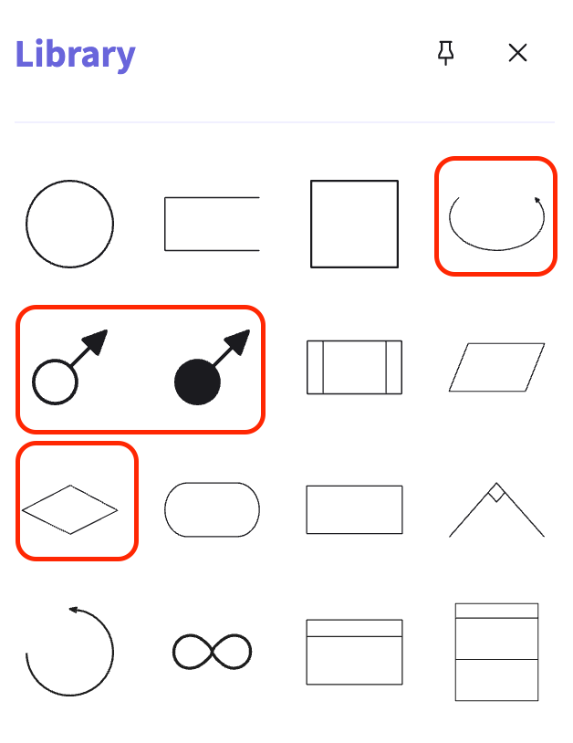
- Always make sure data/flags go down of the left side of the line and come up on the right side of the line.
- Use the text tool the label the data/flags.
- Add the repetition symbol at the top over all the level one processes.
- Add the diamond decisions at the bottom for the "set off alarm" and "message owner" processes.
Step 4. Examine your work and make sure it's correct
Looking back to our highlights of the stimulus we can see we've included all the required functionality and added a great deal of our own interpretation to make the diagram better. All the data/flags make sense are are positioned on the correct sides of the connecting lines. Everything is neatly aligned.
Marking Criteria (through the eyes of a marker)
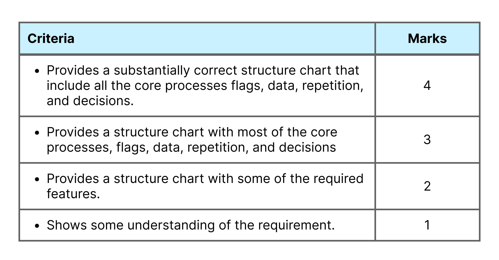
How to get full marks?
- To get full marks, you need to create a "substantially correct entity relationship diagram" that includes all the core processes, flags, data, repetition, and decisions. When we analysed the stimulus, we made sure we were aware of all the processes needed and we also planned all the data/flags, repetition and decision. Even if we missed one small detail, we could still be "substantially correct" and get full marks, but by being rigorous and not just relying on our memory we can reduce the number of silly mistakes whist also improving our understanding of the question and quality of our solution.
- Know how to create structure charts. Revise page 7 of your course specifications.
I'm completely stuck and not getting anywhere. How do I salvage as many marks as a I can?
- Don't leave the question blank. If you're totally stuck, there are always some basic things you can do to guarantee at least one or two marks. E.g there is one mark for "providing a diagram that shows some understanding of the scenario". This means you just need to put down some of the subroutines.
- Even if you're not totally sure about something, just give it a go and you might be right. E.g even if you don't exactly how to arrange all the subroutines if you include as many as you can and attach appropriate data, you can still get 2 to 3 marks.
Entity Relationship Diagram
Drawing Questions — Entity Relationship Diagrams (ERD)
An entity relationship diagram (sometimes called a database schema) is used to represent the tables and relationships in a relational database. They use rectangles to represent the tables with the table's title at the top and separate from the attributes below via a dividing line. These attributes are all the fields in each record of the table and include the primary and foreign keys of the table. Lines are drawn between them and labeled with the nature of the relationship. See the example below from your course specs. If you're not up to date on entity relationship diagrams, revise page 23 of your course specifications.
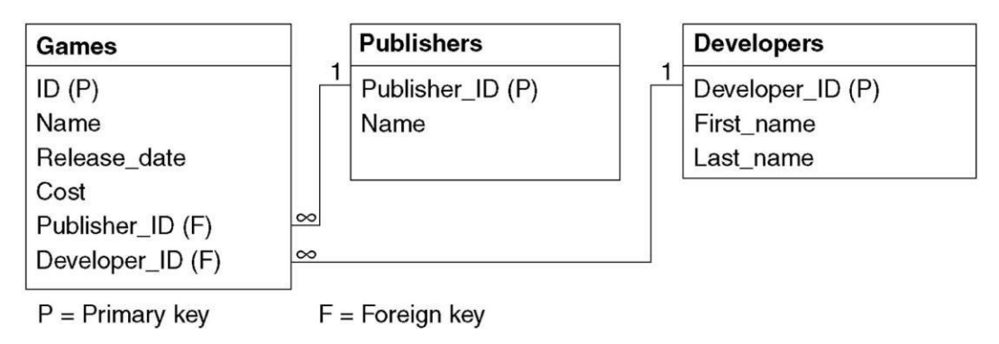
Steps for Answering Entity Relationship Diagram (ERD) Questions:
- Read the question carefully to see what you have to do.
- Read and highlight the stimulus. Decision tree questions almost always have a stimulus. When you read the stimulus, you need to use the highlighter tool to highlight any clues to the questions you need to ask as well as what the end points (leaves) of the tree will be.
- Use the drawing tool to create your ERD.
- Draw the tables with the table title, attributes and labeled primary keys (P) and foreign keys (F).
- Draw the links between the tables and label them with the multiplicity.
- Reread the question/stimulus and make sure you haven't missed anything.
ACTIVITY: Practice HSC Style Question
Answer the Question: Using the question procedure above, expand ERD — Example Question below and complete it either on a piece of paper or using the online HSC Drawing Tool. You can access it by navigating to question 9 the HSC Software Engineering Familiarisation Exam, which has a drawing space you can repurpose for this question.
Learn from the Question:
- Compare your answer with the sample answer in the second expander below.
- Read the question walkthrough to see how to improve and for tips on how to maximise your marks in this type of HSC question.
- Formally mark your response from the eyes of a marker using the provided marking criteria.
ERD — Example Question (without annotations)
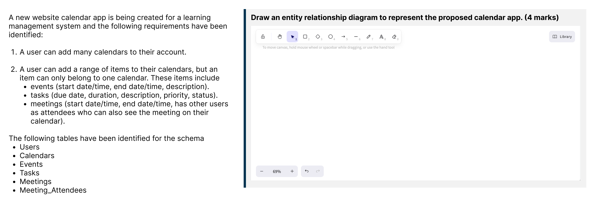
ERD — Example Question (sample answer, question walkthrough, how to mark your work)
Sample Answer
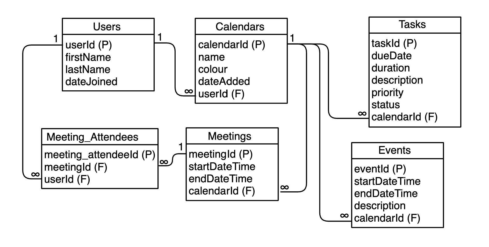
Question Breakdown & Tips and Tricks
Question: Draw an entity relationship diagram to represent the proposed calendar app. (4 marks)
Step 1. Read the question carefully
When reading the question, it's important to ask these two questions:
- What is the topic/content area? This question is testing our ability to create an entity relationship diagram. Entity relationship diagrams can be found on page 23 of your course specifications. Revise 2.3 Web Protocols for more information.
- What are we required to do? We need to draw a decision tree that allows us to distinguish between web protocols. We will need to refer to the stimulus for the exact requirements.
Stimulus:
A new website calendar app is being created for a learning management system and the following requirements have been identified:
- A user can add many calendars to their account.
- A user can add a range of items to their calendars, but an item can only belong to one calendar. These items include
-
- events (start date/time, end date/time, description).
- tasks (due date, duration, description, priority, status).
- meetings (start date/time, end date/time, has other users as attendees who can also see the meeting on their calendar).
The following tables have been identified for the schema
- Users
- Calendars
- Events
- Tasks
- Meetings
- Meeting_Attendees
Step 2. Analyse the stimulus
As you read the stimulus, highlight any tables you identify as red, any attributes in blue, and any clues as to the relationships between the tables in yellow.
Tables
In the stimulus above, the question has been kind enough to give us all the tables we need, although even with out it, there is enough information in the main part of the stimulus to identify these. The tables we need are Users, Calendars, Events, Tasks, Meetings and Meeting_Attendees. Meeting_Attendees is an intermediary table which allows there to be a many to many relationship between Users and Meetings.
Relationships
- Since users can have multiple calendars there will be a one-to-many relationship between Users and Calendars.
- Since calendars can have many events, tasks and meetings, there will be a one to many relationship between Calendars and all these tables.
- In the stimulus, the description for the meetings table is that it "has other users as attendees who also see the meeting on their calendar." This gives us a hint that the attendees are not merely stored as an attribute in the meetings table, but rather, there is a many to many relationship between Users and Meetings where all users are linked to and can see their meetings and multiple meetings can be linked to a User. This explains the presence of the Meeting_Attendees table which is an intermediary table between Users and Meetings to allow this many-to-many relationship.
Attributes
Now that we know the relationship we also know the primary and foreign keys needed for each tables along with their other attributes.
- Below some of the attributes are in green font. These are the I've added to relate to the scenario better and fill in the gaps of the stimulus.
- The primary and foreign keys we've derived from the stimulus a in orange font.
- The provided attributes form the stimulus are in black font.
| Table | Attributes |
| Users | userId (P), firstName, lastName, dateJoined |
| Calendars | calendarId (P), name, colour, dateAdded, userId (F) |
| Events | eventId (P), startDateTime, endDateTime, description, calendarId (F) |
| Tasks | taskId (P), dueDate, duration, description, priority, status, calendarId (F) |
| Meetings | meetingId (P), startDateTime, endDateTime, calendarId (F) |
| Meeting_Attendees | meeting_attendeeId (P), meetingId (F), userId (F) |
Now we are ready to draw our ERD.
Step 3.1 Draw the tables with their attributes.
- First, we need to insert a table item. It looks like a two row table with the top part only large enough for a title and the lower part with plenty of space for all the attributes. You can find it by open by clicking on the "library" button at the top right of the drawing tool. Inside you will see the shape below. Click to insert it on your Canvas.
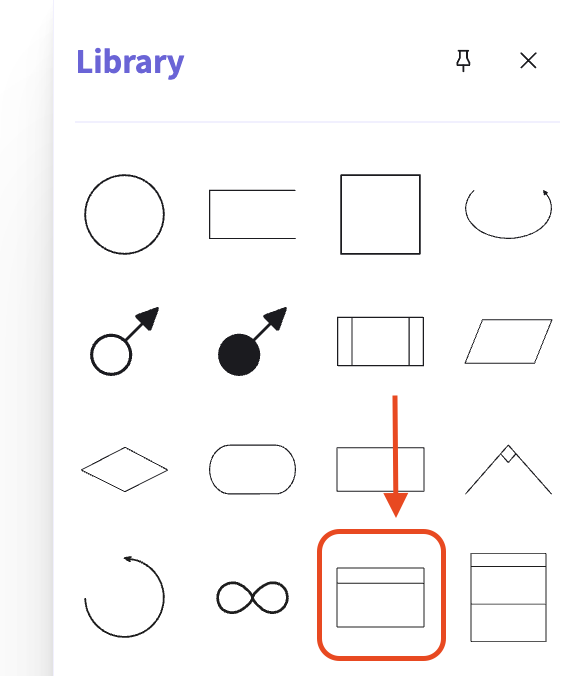
- Use the text tool to add the title of the table in the top row of the shape. Double click on the rectangle to customise the positioning of the text on it.
- Add another text box in the large portion below and add all the attributes making sure to include a (P) after primary keys and an (F) after foreign keys. If you need to resize the table shape, you need to right click on it and select "Ungroup selection". This will disassemble the shape into a rectangle and dividing line. You can now resize each part of the shape individually weather you need more width or height.
Step 3.2 Draw the relationships between the tables.
- Using the arrow tool (press A on your keyboard as a shortcut), draw a line from one table to the other making sure the line intersects the table's boarder at the height of the attribute the relationship is being made on. It's often a good idea to ensure the text box inside the table shape spans the width of the table so the arrows link consistently.
- Select the arrow and then set the type of be "elbow arrow" from the "arrow type" section in the sidebar. This will make it from a curvy/straight arrow into one that makes right angle turns.
- Set the arrowheads of both sides of the arrow to none. This will make it look like a line, but we needed to use an arrow to get to "elbow" style often used in ERDs.
- Repeat step 1 adding the arrows between all the tables. You may find that you need to move some of the tables so the lines don't cross. We don't want to have crossing lines on ERDs if it's possible. Sometimes the arrow tool can be frustrating. Just make sure you start them right on the edge boarder of the shape and then let go when you are hovering over the destination for the line.
- Only after you've added all your lines should you add the multiplicities since we don't want to keep moving them around as we rearrange the diagram and it can also confuse the arrow tool making it produce all sorts of crazy results. To add a "1" use the text tool and type "1" into it. For the infinity symbol, open the library again and select the infinity symbol from the list of shapes. Once you've got one of each, you can just copy them to all the other lines.
Step 4. Examine your work and make sure it's correct
Looking back to our highlights of the stimulus we can see we've added all the required tables and attributes. We've also added a few of our own to add extra detail. We've also included all the correct relationships required.
Marking Criteria (through the eyes of a marker)
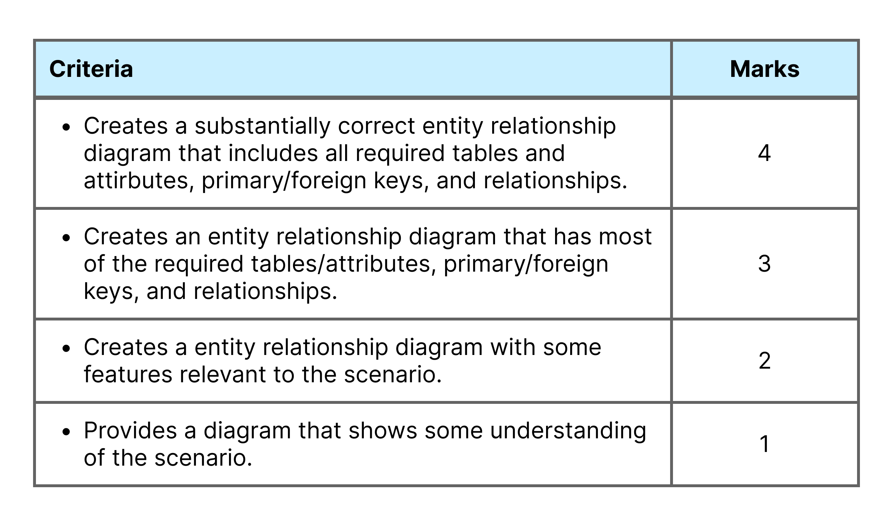
How to get full marks?
- To get full marks, you need to create a "substantially correct entity relationship diagram" that includes all required tables/attributes, primary/foreign keys and relationships + multiplicities. To ensure we included all of these, we highlighted them stimulus. Even if we missed one small detail, we could still be "substantially correct" and get full marks, but by being rigorous and not just relying on our memory we can reduce the number of silly mistakes whist also improving our understanding of the question and quality of our solution.
- Know how to create entity relationship diagrams. In this question, the hardest part with the many-to-many relationship involving the intermediary table. Revise page 23 of your course specifications.
I'm completely stuck and not getting anywhere. How do I salvage as many marks as a I can?
- Don't leave the question blank. If you're totally stuck, there are always some basic things you can do to guarantee at least one or two marks. E.g there is one mark for "providing a diagram that shows some understanding of the scenario". This means you just need to put down one or two tables the have a title and some attributes and you would get one mark. If you had two correct tables and maybe a simple relationship, that could get you two marks which is better that none, so always put down what you know.
- Even if you're not totally sure about something, just give it a go and you might be right. E.g even if you're not sure how to do the many to many relationship, just look at the relationships you've identified and the tables and try something that might work.
Disclaimer
Please note that these are not official HSC questions from NESA — You will not be able to find them on the internet. They have been designed to look very similar to what you can expect in the exam, so you can complete them like any official NESA exam question. Marking criteria that reflect the HSC have also been provided where applicable.